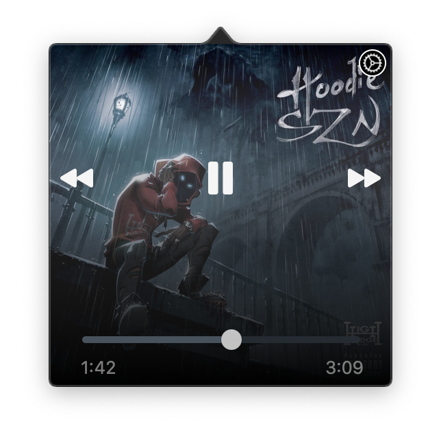

- Added an all new playback slider
The new playback slider adapts its color to the artwork of the current song.
- Added new app icons
- Added asynchronous artwork image downloading
This makes for a much smoother user experience. You may have experienced that the application would hang previously. This should no longer happen.
- Added an option to automatically switch dark/light mode
This new option under "Preferences -> Display" will make the application automatically adapt to the system's appearance.
- Fixed a layout issue where the playback slider was cut off slightly